成品库码\拆垛机器人更换润滑油的步骤及方法
适用范围
适用于ABB机器人
作业准备 (安全评估、工具准备)
作业安全因素
防止工具伤人
防止电机坠落
工具准备
作业步骤
成品库码\拆垛机器人为同一型号(IRB6640)，更换润滑油的步骤及方法一致，其中第1、2、3、6轴润滑油型号：Kyodo Yushi TMO150, 第4、5轴润滑油型号：Mobilgear 600 XP320, 具体如下图所示:
第一轴：油量：6100 ml （Kyodo Yushi TMO150）
1、松开放油孔螺栓，排出旧油
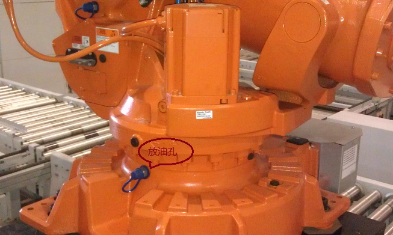
2、待旧油排完后，拧回放油孔螺栓，松开注油孔和溢流孔的内六角螺栓，向注油孔加注新润滑油至溢流孔有油流出即可。（加注油量约6100 ml）
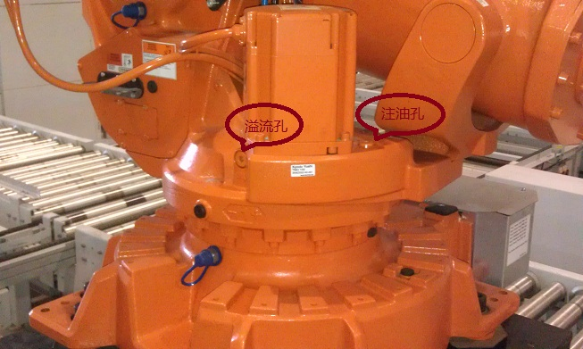
第二轴：油量：5800 ml （Kyodo Yushi TMO150）
1、松开放油孔螺栓，排出旧油
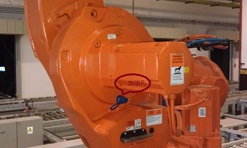
2、待旧油排完后，拧回放油孔螺栓，松开注油孔和溢流孔的内六角螺栓，向注油孔加注新润滑油至溢流孔有油流出即可。（加注油量约5800 ml）
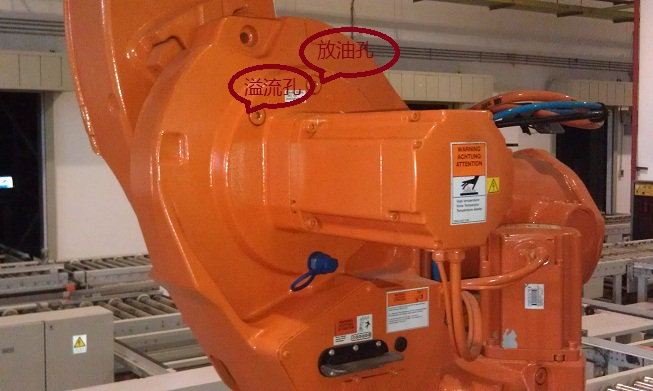
第三轴：油量：2500 ml （Kyodo Yushi TMO150）
1、手动操作机器人至上图的姿态
2、松开放油孔螺栓，排出旧油
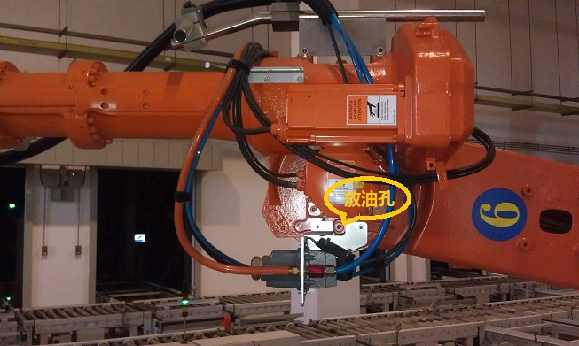
3、待油排完后，拧回放油孔螺栓，手动操作机器人至上图的姿态
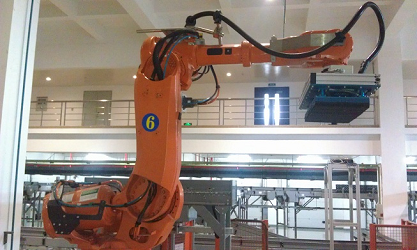
4、松开注油孔螺栓，向注油孔加注新润滑油至注油孔有润滑油流出即可。（加注油量约2500 ml）
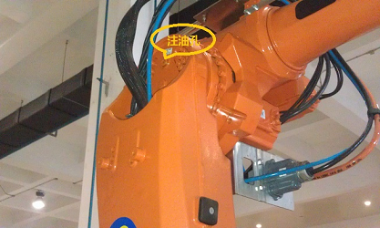
第四轴：油量：8100 ml （Mobilgear 600 XP320）
1、手动操作机器人至上图的姿态
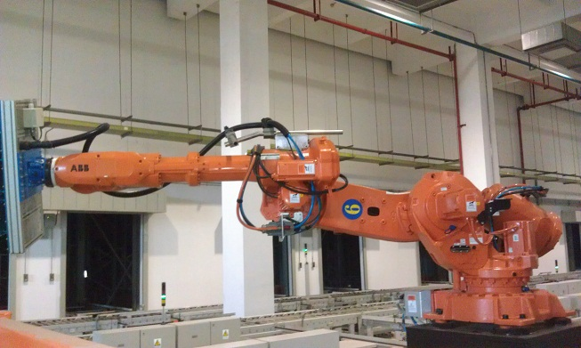
2、松开放油孔内六角螺栓，排出旧油
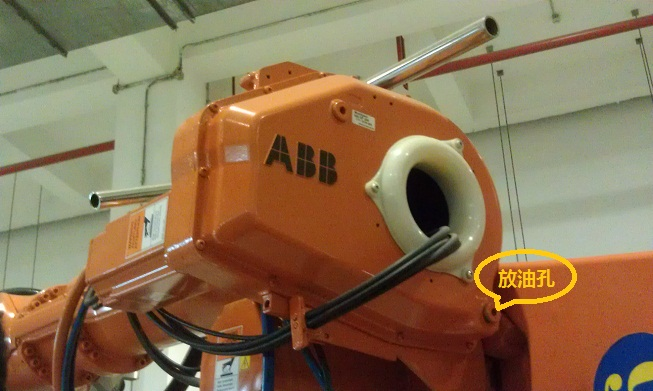
3、待油排完后，拧回放油孔螺栓，松开注油孔的内六角螺栓，向注油孔加注新润滑油至注油孔有油流出即可。（加注油量约8100 ml）
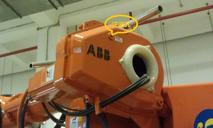
第五轴：油量：6700 ml（Mobilgear 600 XP320）
1、手动操作机器人至上图的姿态
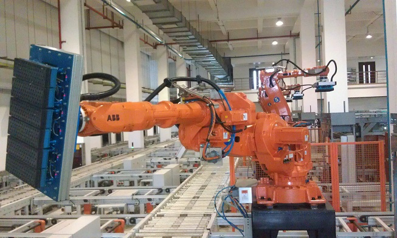
2、松开放油孔内六角螺栓，排出旧油
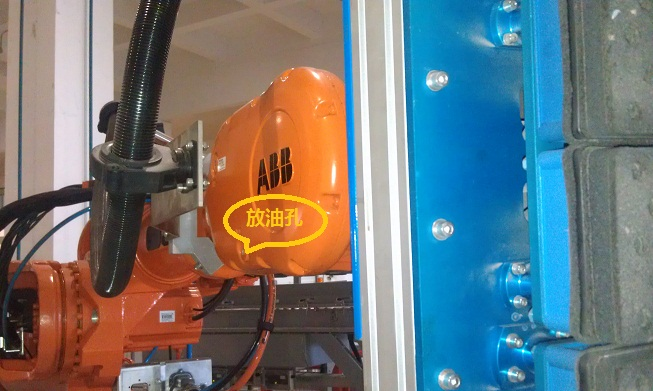
3、待油排完后，拧回放油孔螺栓，松开注油孔的内六角螺栓，向注油孔加注新润滑油至注油孔有油流出即可。（加注油量约6700 ml）
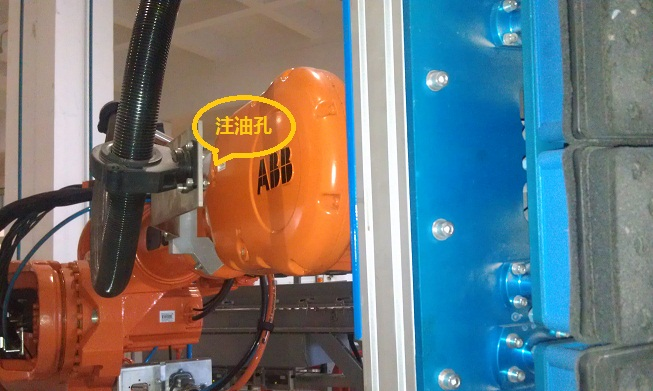
第六轴：油量：450 ml （Kyodo Yushi TMO150）
1、手动操作机器人至上图的姿态
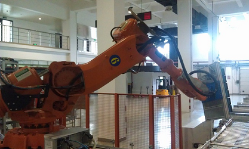
2、手动操作机器人第六轴，旋转放油孔至正下方，松开放油孔内六角螺栓，排出旧油
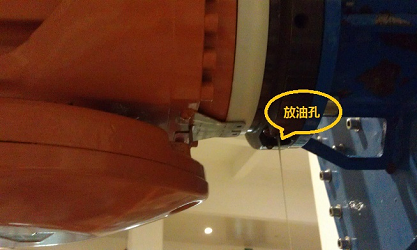
3、待油排完后，拧回放油孔螺栓，松开注油孔螺栓，向注油孔加注约450 ml新润滑油即可。
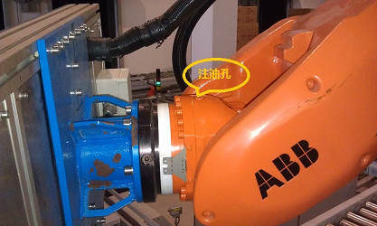
效果检查
验收标准
各零部件并无变形
电机正常无损坏
作业结束
收拾现场，零件是否漏装，工具无遗落
最后保持现场清洁
总结
装配过程应注意配合要求，防止安装失败
安装过程需要对编码器参数进行校准